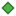

<!doctype html>
<html lang="en">
    <head>
        <meta charset="utf-8">
        <meta http-equiv="X-UA-Compatible" content="IE=edge">
        <meta name="viewport" content="initial-scale=1,user-scalable=no,maximum-scale=1,width=device-width">
        <meta name="mobile-web-app-capable" content="yes">
        <meta name="apple-mobile-web-app-capable" content="yes">
        <link rel="stylesheet" href="css/leaflet.css">
        <link rel="stylesheet" href="css/qgis2web.css"><link rel="stylesheet" href="css/fontawesome-all.min.css">
        <link rel="stylesheet" href="css/leaflet-measure.css">
        <style>
        html, body, #map {
            width: 100%;
            height: 100%;
            padding: 0;
            margin: 0;
        }
        </style>
        <title></title>
    </head>
    <body>
        <div id="map">
        </div>
        <script src="js/qgis2web_expressions.js"></script>
        <script src="js/leaflet.js"></script>
        <script src="js/leaflet-svg-shape-markers.min.js"></script>
        <script src="js/leaflet.rotatedMarker.js"></script>
        <script src="js/leaflet.pattern.js"></script>
        <script src="js/leaflet-hash.js"></script>
        <script src="js/Autolinker.min.js"></script>
        <script src="js/rbush.min.js"></script>
        <script src="js/labelgun.min.js"></script>
        <script src="js/labels.js"></script>
        <script src="js/leaflet-measure.js"></script>
        <script src="data/Tracks_1.js"></script>
        <script src="data/cwtpointsofinterest_2.js"></script>
        <script src="data/cwtroughbits_3.js"></script>
        <script>
        var map = L.map('map', {
            zoomControl:true, maxZoom:28, minZoom:1
        }).fitBounds([[56.74544048543527,-6.247536409154407],[57.24291008293349,-4.576428485090105]]);
        var hash = new L.Hash(map);
        map.attributionControl.setPrefix('<a href="https://github.com/tomchadwin/qgis2web" target="_blank">qgis2web</a> &middot; <a href="https://leafletjs.com" title="A JS library for interactive maps">Leaflet</a> &middot; <a href="https://qgis.org">QGIS</a>');
        var autolinker = new Autolinker({truncate: {length: 30, location: 'smart'}});
        var measureControl = new L.Control.Measure({
            position: 'topleft',
            primaryLengthUnit: 'feet',
            secondaryLengthUnit: 'miles',
            primaryAreaUnit: 'sqfeet',
            secondaryAreaUnit: 'sqmiles'
        });
        measureControl.addTo(map);
        document.getElementsByClassName('leaflet-control-measure-toggle')[0]
        .innerHTML = '';
        document.getElementsByClassName('leaflet-control-measure-toggle')[0]
        .className += ' fas fa-ruler';
        var bounds_group = new L.featureGroup([]);
        function setBounds() {
        }
        map.createPane('pane_OSMTFLandscape_0');
        map.getPane('pane_OSMTFLandscape_0').style.zIndex = 400;
        var layer_OSMTFLandscape_0 = L.tileLayer('https://tile.thunderforest.com/landscape/{z}/{x}/{y}.png?apikey=c74fa5e4990241a09d78d41aa377f07f', {
            pane: 'pane_OSMTFLandscape_0',
            opacity: 1.0,
            attribution: '<a href="https://www.openstreetmap.org/copyright">Maps © Thunderforest, Data © OpenStreetMap contributors</a>',
            minZoom: 1,
            maxZoom: 28,
            minNativeZoom: 0,
            maxNativeZoom: 19
        });
        layer_OSMTFLandscape_0;
        map.addLayer(layer_OSMTFLandscape_0);
        function pop_Tracks_1(feature, layer) {
            var popupContent = '<table>\
                    <tr>\
                        <td colspan="2">' + (feature.properties['Name'] !== null ? autolinker.link(feature.properties['Name'].toLocaleString()) : '') + '</td>\
                    </tr>\
                    <tr>\
                        <td colspan="2">' + (feature.properties['description'] !== null ? autolinker.link(feature.properties['description'].toLocaleString()) : '') + '</td>\
                    </tr>\
                    <tr>\
                        <td colspan="2">' + (feature.properties['timestamp'] !== null ? autolinker.link(feature.properties['timestamp'].toLocaleString()) : '') + '</td>\
                    </tr>\
                    <tr>\
                        <td colspan="2">' + (feature.properties['begin'] !== null ? autolinker.link(feature.properties['begin'].toLocaleString()) : '') + '</td>\
                    </tr>\
                    <tr>\
                        <td colspan="2">' + (feature.properties['end'] !== null ? autolinker.link(feature.properties['end'].toLocaleString()) : '') + '</td>\
                    </tr>\
                    <tr>\
                        <td colspan="2">' + (feature.properties['altitudeMode'] !== null ? autolinker.link(feature.properties['altitudeMode'].toLocaleString()) : '') + '</td>\
                    </tr>\
                    <tr>\
                        <td colspan="2">' + (feature.properties['tessellate'] !== null ? autolinker.link(feature.properties['tessellate'].toLocaleString()) : '') + '</td>\
                    </tr>\
                    <tr>\
                        <td colspan="2">' + (feature.properties['extrude'] !== null ? autolinker.link(feature.properties['extrude'].toLocaleString()) : '') + '</td>\
                    </tr>\
                    <tr>\
                        <td colspan="2">' + (feature.properties['visibility'] !== null ? autolinker.link(feature.properties['visibility'].toLocaleString()) : '') + '</td>\
                    </tr>\
                    <tr>\
                        <td colspan="2">' + (feature.properties['drawOrder'] !== null ? autolinker.link(feature.properties['drawOrder'].toLocaleString()) : '') + '</td>\
                    </tr>\
                    <tr>\
                        <td colspan="2">' + (feature.properties['icon'] !== null ? autolinker.link(feature.properties['icon'].toLocaleString()) : '') + '</td>\
                    </tr>\
                    <tr>\
                        <td colspan="2">' + (feature.properties['snippet'] !== null ? autolinker.link(feature.properties['snippet'].toLocaleString()) : '') + '</td>\
                    </tr>\
                </table>';
            layer.bindPopup(popupContent, {maxHeight: 400});
        }

        function style_Tracks_1_0() {
            return {
                pane: 'pane_Tracks_1',
                opacity: 1,
                color: 'rgba(219,30,42,1.0)',
                dashArray: '',
                lineCap: 'square',
                lineJoin: 'bevel',
                weight: 3.0,
                fillOpacity: 0,
                interactive: false,
            }
        }
        map.createPane('pane_Tracks_1');
        map.getPane('pane_Tracks_1').style.zIndex = 401;
        map.getPane('pane_Tracks_1').style['mix-blend-mode'] = 'normal';
        var layer_Tracks_1 = new L.geoJson(json_Tracks_1, {
            attribution: '',
            interactive: false,
            dataVar: 'json_Tracks_1',
            layerName: 'layer_Tracks_1',
            pane: 'pane_Tracks_1',
            onEachFeature: pop_Tracks_1,
            style: style_Tracks_1_0,
        });
        bounds_group.addLayer(layer_Tracks_1);
        map.addLayer(layer_Tracks_1);
        function pop_cwtpointsofinterest_2(feature, layer) {
            var popupContent = '<table>\
                    <tr>\
                        <th scope="row">id</th>\
                        <td>' + (feature.properties['id'] !== null ? autolinker.link(feature.properties['id'].toLocaleString()) : '') + '</td>\
                    </tr>\
                    <tr>\
                        <th scope="row">notes</th>\
                        <td>' + (feature.properties['notes'] !== null ? autolinker.link(feature.properties['notes'].toLocaleString()) : '') + '</td>\
                    </tr>\
                    <tr>\
                        <th scope="row">name</th>\
                        <td>' + (feature.properties['name'] !== null ? autolinker.link(feature.properties['name'].toLocaleString()) : '') + '</td>\
                    </tr>\
                </table>';
            layer.bindPopup(popupContent, {maxHeight: 400});
        }

        function style_cwtpointsofinterest_2_0() {
            return {
                pane: 'pane_cwtpointsofinterest_2',
                shape: 'diamond',
                radius: 6.0,
                opacity: 1,
                color: 'rgba(61,128,53,1.0)',
                dashArray: '',
                lineCap: 'butt',
                lineJoin: 'miter',
                weight: 2.0,
                fill: true,
                fillOpacity: 1,
                fillColor: 'rgba(84,176,74,1.0)',
                interactive: true,
            }
        }
        map.createPane('pane_cwtpointsofinterest_2');
        map.getPane('pane_cwtpointsofinterest_2').style.zIndex = 402;
        map.getPane('pane_cwtpointsofinterest_2').style['mix-blend-mode'] = 'normal';
        var layer_cwtpointsofinterest_2 = new L.geoJson(json_cwtpointsofinterest_2, {
            attribution: '',
            interactive: true,
            dataVar: 'json_cwtpointsofinterest_2',
            layerName: 'layer_cwtpointsofinterest_2',
            pane: 'pane_cwtpointsofinterest_2',
            onEachFeature: pop_cwtpointsofinterest_2,
            pointToLayer: function (feature, latlng) {
                var context = {
                    feature: feature,
                    variables: {}
                };
                return L.shapeMarker(latlng, style_cwtpointsofinterest_2_0(feature));
            },
        });
        bounds_group.addLayer(layer_cwtpointsofinterest_2);
        map.addLayer(layer_cwtpointsofinterest_2);
        function pop_cwtroughbits_3(feature, layer) {
            var popupContent = '<table>\
                    <tr>\
                        <th scope="row">id</th>\
                        <td>' + (feature.properties['id'] !== null ? autolinker.link(feature.properties['id'].toLocaleString()) : '') + '</td>\
                    </tr>\
                    <tr>\
                        <th scope="row">notes</th>\
                        <td>' + (feature.properties['notes'] !== null ? autolinker.link(feature.properties['notes'].toLocaleString()) : '') + '</td>\
                    </tr>\
                </table>';
            layer.bindPopup(popupContent, {maxHeight: 400});
        }

        function style_cwtroughbits_3_0() {
            return {
                pane: 'pane_cwtroughbits_3',
                radius: 6.0,
                opacity: 1,
                color: 'rgba(179,92,21,1.0)',
                dashArray: '',
                lineCap: 'butt',
                lineJoin: 'miter',
                weight: 2.0,
                fill: true,
                fillOpacity: 1,
                fillColor: 'rgba(247,128,30,1.0)',
                interactive: true,
            }
        }
        map.createPane('pane_cwtroughbits_3');
        map.getPane('pane_cwtroughbits_3').style.zIndex = 403;
        map.getPane('pane_cwtroughbits_3').style['mix-blend-mode'] = 'normal';
        var layer_cwtroughbits_3 = new L.geoJson(json_cwtroughbits_3, {
            attribution: '',
            interactive: true,
            dataVar: 'json_cwtroughbits_3',
            layerName: 'layer_cwtroughbits_3',
            pane: 'pane_cwtroughbits_3',
            onEachFeature: pop_cwtroughbits_3,
            pointToLayer: function (feature, latlng) {
                var context = {
                    feature: feature,
                    variables: {}
                };
                return L.circleMarker(latlng, style_cwtroughbits_3_0(feature));
            },
        });
        bounds_group.addLayer(layer_cwtroughbits_3);
        map.addLayer(layer_cwtroughbits_3);
        var baseMaps = {};
        L.control.layers(baseMaps,{' cwt-rough-bits': layer_cwtroughbits_3,' cwt-points-of-interest': layer_cwtpointsofinterest_2,' Tracks': layer_Tracks_1,"OSM TF Landscape": layer_OSMTFLandscape_0,}).addTo(map);
        setBounds();
        </script>
    </body>
</html>
